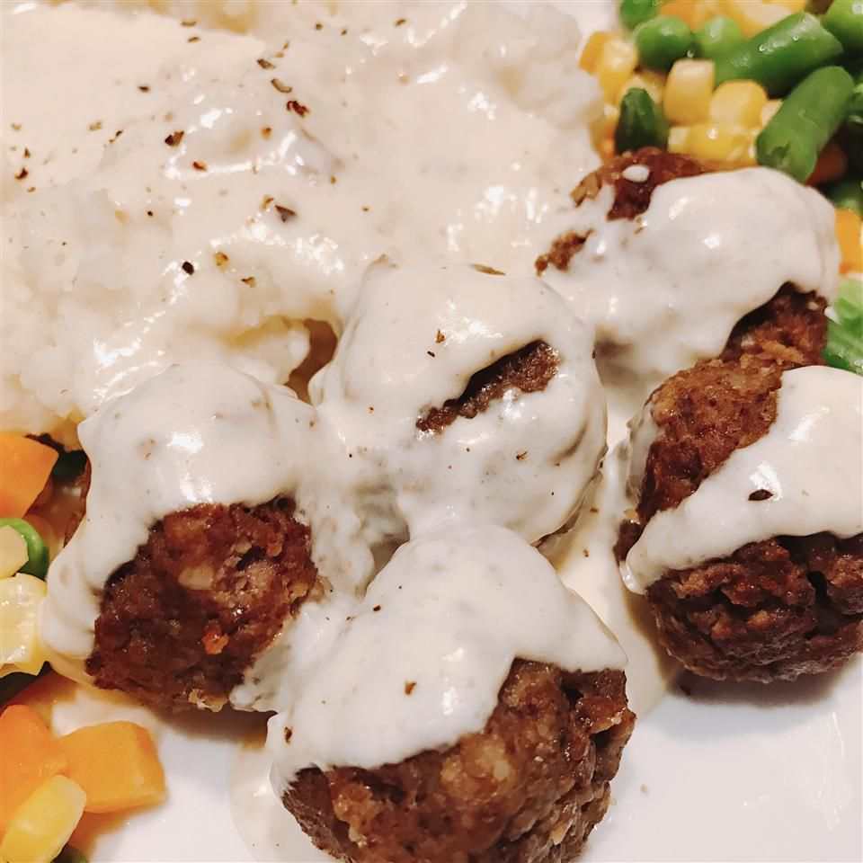

Finnish Meatballs

i don't know yet
Ingredients
- 1 pound lean ground beef
- 1 cup plain bread crumbs
- 1 yellow onion, minced
- 1 egg
- ½ cup whipping cream
- 2 teaspoons salt
- 1 teaspoon ground allspice
- ¼ cup butter
- 2 tablespoons all-purpose flour
- 2 cups milk
- ½ cup whipping cream
Directions
- Mix the ground beef, bread crumbs, onion, egg, cream, salt, and allspice in a bowl with your hands until evenly mixed. Roll the mixture into golf ball-sized spheres.
- Melt the butter in a large skillet over medium heat. Cook about half the meatballs in the melted butter until evenly browned on all sides, 5 to 7 minutes; remove to a plate and repeat with the remaining meatballs, keeping the liquid in the skillet when finished.
- Sift the flour into the skillet drippings; cook the flour in the skillet drippings until brown, 2 to 3 minutes. Slowly stream the milk into the skillet while whisking vigorously; pour the cream into the mixture and stir until smooth. If you aren't good at making gravy and end up with some lumps you can pour the gravy through a strainer. Return all the meatballs to the skillet; stir to coat with the gravy. Bring the mixture to a simmer and cook until the meatballs are cooked through, 15 to 20 minutes.
Main Page